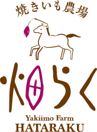

未来を
育てる
焼き芋ですねん。


大切な人、好きな町
全ての未来を育てる存在になりたい。
自然の恵みをいっぱいに受けた
畑楽の石焼き芋は
「人」と「町」のことを一番に考え、
安心して食べていただける逸品です。
たくさんの人の手を借りて
畑で楽しく働きながらも
大事に育てたさつまいも。
農家がこだわって作った石焼き芋が
町の賑わいや子どもたちの笑顔に繋がる
ピースの一つになることを願って

「未来を育てる焼き芋」が
みなさんの元に届くまで
畑楽ではさつまいもに適した土壌を整えるため、「０」から土づくりを始めました。
さつまいもに合った土壌環境にするため、肥料にはサラブレッドの馬糞を使い、自然の力も借りて土を再生させながら栽培を行っています。


畑楽では紅はるかを栽培していて、自然の恵みをたっぷりと受けた味わいは非常に濃厚です。様々な農家さんから学んだ育て方を畑楽の土地で実践するなど、試行錯誤の末に“本当に美味しい”と思うものになりました。
中心温度まで管理して焼いているため、芯までしっかりと火が通っています。
皮がほんのりと焼けた芳ばしい香りと紅はるかの優しい甘さが広がり、舌も心もホッコリとさせてくれます。


農場長 内藤靖人
みなさん、はじめまして！
畑楽の代表・内藤靖人です。
埼玉県で生まれ育ち、震災ボランティアを機に宮城県山元町へ移住しました。農業未経験で移住・就農してからは、たくさんの方に助けてもらい、今では栽培から提供までこだわりぬいた石焼き芋を販売しています。
復興途中の山元町はまだまだ可能性を秘めた場所です。県外からのインターンシップ受け入れや移住サポートにも協力し、焼き芋を楽しんでもらうだけでなく、町や人のより良い未来を想いながら、畑で楽しく働いています。
大切に育て、じっくりと手焼きした石焼き芋。ぜひ味わってみてください。
埼玉県生まれ。
震災を機にボランティアで山元町を訪ねる。
地元の人たちとともに行った復興の活動をする中で、町を好きになり移住。
農業で町を活性化を目指し、ナイトウファームを創業。
農業未経験ながら、さまざまな品種の作物に取り組む。
2019年より株式会社畑楽を設立。
現在はさつまいもから焼き芋まで、自らの手で作り上げている。
商品一覧